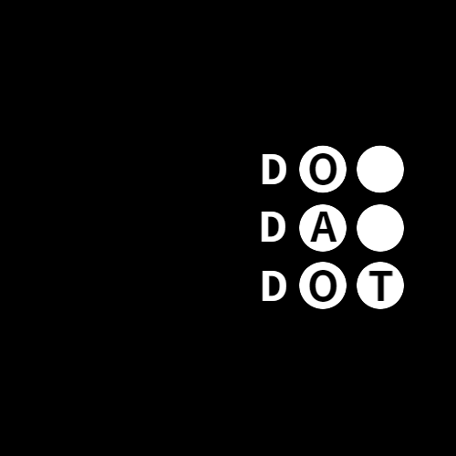

두다닷 로고 및 대구광역시시민공익활동지원센터 로고
대구지하철 승강장 자판기의 점자 표기 환경을 개선하기 위한 프로젝트입니다.
두다닷 소개
두다닷은 시각장애인의 점자 정보 접근과 문화예술 참여 확대를 목표로 활동하는 비영리 임의단체입니다. 점자체험 부스 운영, 점자 메뉴판 제작, 공연 프로그램 제작 등을 통해 일상 속에서 점자가 보다 정확하고 자연스럽게 사용될 수 있도록 다양한 공익활동을 진행하고 있습니다.
손끝으로 이용하는 자판기 프로젝트 소개
일상에서 쉽게 접할 수 있는 자판기에는 점자 표기가 없거나, 있어도 잘못 표기된 경우가 많아 시각장애인이 상품 정보를 정확하게 확인하기 어려운 상황이 발생합니다.
두다닷은 이러한 문제를 개선하기 위해 지하철 승강장 내 자판기를 직접 조사하고, 상품 정보와 점자 표기 상태를 정리하여 누구나 접근 가능한 형태로 제공하는 작업을 진행하고 있습니다.
현재 이 페이지는 조사된 데이터를 기반으로 제작되었으며, 점자 환경 개선을 위해 지속적으로 업데이트되고 있습니다.
지원사업 안내
이 프로젝트는 대구광역시시민공익활동지원센터의 '2026 시민공익활동 아이디어 씨앗' 지원사업을 통해 진행되었습니다. 사업 종료 이후에도 두다닷이 지속적으로 유지·보수 및 업데이트를 진행할 예정입니다.
문의 및 참여 dodadot@naver.com

두다닷 로고 및 대구광역시시민공익활동지원센터 로고